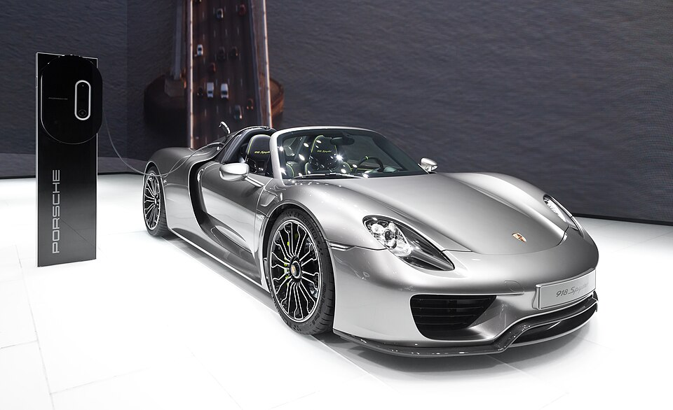

Design language
This concept focuses on precision, flow, and aerodynamic balance. Its lines feel purposeful rather than decorative, which gives it a very refined performance character.

Hybrid Performance
The Porsche 918 Spyder combines sleek supercar proportions with a more technical and performance-led design language, creating a concept that feels advanced and highly engineered.
This concept focuses on precision, flow, and aerodynamic balance. Its lines feel purposeful rather than decorative, which gives it a very refined performance character.
The Porsche feels technologically advanced without becoming visually overwhelming. It blends elegant bodywork with the presence expected from a flagship performance car.
On the homepage, this model brings a cleaner, more contemporary sports-car energy that balances the more conceptual and artistic forms in the collection.